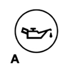
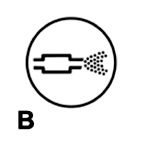
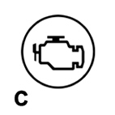

|


|
|
| Service News | ||
|
|
Various models
All types Diesel with (MiTo - 147 - 147 Ducati Corse - Alfa 159 - Alfa GT - Brera / Spider) |
|
|||
| 0000 0 000 AA |
DEGRADED OIL INDICATION
Warning light operation and oil change – Information for the network |
|||
On vehicles with diesel engines provided with DPF system (particulate trap), operating conditions may occur which cause the following indications:
1. Degraded engine oil indication:
the red minimum engine oil pressure warning light (A – Fig. 1) will blink and a specific message may appear on the display (where provided). The warning light may blink as follows according to the versions:
-for one minute every two hours;-for three minute cycles with the light off for 5 seconds until the oil is changed. | The warning light will come on steady to indicate insufficient engine oil pressure at the specific message will appear on the display (where provided). |
Fig. 1

The blinking of the warning light is not a fault but indicates that the oil needs to be changed as a consequence of normal use.
Supplementary amounts of fuel which are not burnt during combustion are injected during the DPF filter regeneration process: a small amount of fuel may leak through the piston rings and dilute the engine oil which increases its level. The engine ECU stores this data to calculate the engine oil degrading state and informs the driver when the oil needs to be changed.
Remember that engine oil degrading is accelerated by:
-prevalent use in cities which makes the DPF regeneration process more frequent-use for short distances in which the engine does not reach running temperature-repeated regeneration interruptions indicated by means of the DPF warning light (see paragraph 2)As a consequence, the degraded engine oil must be always changed when the warning light starts blinking (a - fig. 1).
If the engine oil warning light lights up after travelling a short distance (e.g. 3000 – 4000km), check whether the fault is caused by the incorrect operation of the DPF/catalyser systems which continuously control regeneration attempts.
| After the first indication, whenever the engine is started, the warning light will blink in the previously illustrated method (see introduction) until the oil is changed. A message will appear on the display (where provided), in addition to the warning light. |
 | For vehicles equipped with DPF, the engine oil change frequency is based on actual degrading and not on the Service Schedule. |
| The warning light will come on when the engine oil has lost its lubricating properties. It is not related to the engine oil level and thus topping up when the oil when the warning light comes on is to recommended. |
| The engine may be seriously damaged due to the increased engine oil level and the blow-up operation if the indication is reset by means of Examiner but the degraded oil is not changed. |
2. Particulate trap during regeneration
-The amber warning light comes on (B - Fig. 2) and a specific message is shown on the display (where provided).Fig. 2

Operation of this warning lightdoes not indicate faulty operation of the vehicle.
The warning light comes on to indicate that the DPF needs to be regenerated. It is advisable to keep the engine running until the warning light goes out to indicate that the procedure is over. The warning light will be turned on by the engine ECU after the engine has been repeated stopped during the DPF regeneration.
| Ignoring the warning light will cause: - High risk of DPF obstruction and consequent lighting of the MIL warning light (see paragraph 3). - Continuous DPF regeneration attempts will consequent early oil decay (see paragraph 1). |
| In optimal conditions, for regenerating the DPF, the car must travel at a speed higher than 60 km/h at approximately 1800 rpm, respecting the highway code and the traffic and weather conditions in all cases. DPF regeneration will last for approximately 15 minutes in average in these conditions. |
3. Obstructed particular trap and engine control system fault
-The amber warning light comes on (C - Fig. 3) in some cases with warning light (B - Fig. 2) and a specific message is shown on the display (where provided). Examiner finds presence of error P1206 - Level 1 or P2002 - Level 2.Fig. 3

Operation of this warning light indicated faulty operation of the engine system. DPF could not dispose of the accumulated particulate and the CCM indicates that the car must be taken to a workshop to have the system seen to.
If the car reaches the workshop in these conditions, seek the causes which led to DPF obstruction by applying the checklist shown in SN 10.04.09. After having identified and eliminated the fault, carry out a forced DPF regeneration to eliminate accumulated particulate.
| - The engine control system warning light and the presence of error P1206- Level 1 in the engine ECU memory indicates that the system needs to be carefully checked (see SN 10.04.09) followed by Service regeneration carried out by a diagnostic operator at the service centre because the DPF filter is obstructed. In these conditions, the engine ECU actuates a recovery procedure and slightly limits the engine performance. - The engine control system warning light and the presence of error P2002- Level 2 in the engine ECU memory indicates that the system needs to be carefully checked (see SN 10.04.09) followed by Service regeneration carried out by a diagnostic operator at the service centre because the DPF filter is excessively obstructed and probably needs to be replaced. In these conditions, the engine ECU actuates a recovery procedure and slightly limits the engine performance. - Replace the DPF if the service regeneration is interrupted by excessively high back pressure. |
Description of warning light operation
The DPF (Diesel Particulate Filter) is a mechanical filter, integral with the exhaust system, that physically traps particulates present in the exhaust gases of Diesel engines. The diesel particular filter has been adopted to eliminate almost totally particulates in compliance with current / future law regulations.
During normal use of the vehicle, the engine control unit records a set of data (e.g.: travel time, type of route, temperatures, etc.) and it will then calculate how much particulates has been trapped by the filter.
Since this filter physically traps particulate, it should be regenerated (cleaned) at regular intervals by burning carbon particles.
In normal conditions, the warning lights come on and go out after a few seconds at key-on (A - Fig. 1, B - Fig. 2 and C - Fig. 3).
Regeneration occurs in average every 800/1000 km (the distance travelled between two regeneration procedures depends on vehicle use). In particularly demanding conditions (mainly in cities and short distances), the frequency between regeneration processes may be reduced to a few hundreds of kilometres (250-300). When the engine control system cannot regenerate the DPF filter due to the driving profile the DPF warning light (B – Fig. 2) will come on if the temperature is higher than 80°C (a future development will consist in lower the threshold to 70°C). The following conditions may occur during regeneration:
-limited increase of idling ratio;-operation of the fan;-slight increase of smokiness;-high temperatures in exhaust;therefore, these situations - which do not effect handling or the environment - are not faults.
Faq:
Some questions that the customer may ask and the answers are listed below:
1. QUESTION: Does the degraded oil warning light (Fig. - 1) indicate an engine fault?
ANSWER: The degraded oil warning light does not indicate a fault but simply indicates that it is time to change the oil. Cars with DPF particulate filter have a different engine oil change management strategy: the oil change frequency no longer depends on the distance driven but is indicated by the warning light (Fig. - 1) on the instrument panel. The engine ECU records the vehicle use conditions and indicates when the engine oil needs to be changes.
2. QUESTION: What effects the oil life?
ANSWER: Some fuel crosses the piston rings and ends up in the engine oil whenever the DPF is regenerated. The consequent reduction of engine oil causes a partial reduction of the lubricant features of the oil and increases the engine oil level. Driving missions which cause frequent regeneration will inevitably cause early engine oil degrading.
3. QUESTION: What can I do to increase engine oil life?
ANSWER: Engine oil degrading depends on the conditions of use of the vehicle. Engine oil is degraded in the following conditions:
- When the car is driven for short distances and the engine does not warm up; prevalent use during engine warm up will imply more frequent DPF regeneration, consequent engine oil and repeated interruption of the regeneration process controlled by the CCM.
- Prevalent use in cities: use on motorways will allow to partially evaporate some of the fuel contained in the oil. The CCM will take partial oil condition recovery in consideration.
- Ignoring DPF warning light (see par 2): if the engine is stopped when the DPF light is on, the regeneration process will not be completed and therefore the CCM will start a new regeneration when the engine is started again.
4. QUESTION: What happens if I ignore the oil degraded warning light?
ANSWER: Ignoring the oil degrading warning light will imply:
- Early engine wear caused by engine operation with oil excessively diluted by fuel.
- Increase of engine oil level in sump which in the most severe conditions may cause severe engine damage.
5. QUESTION: Does the oil warning light indicate low engine oil level?
ANSWER: No, the indication is not linked to engine oil level. Adding oil when the warning light comes on could be very dangerous for the engine. The warning light indicates that the oil has lost its lubricating features.
6. QUESTION: What happens if I repeatedly ignore the DPF warning light and stop the engine before finishing the regeneration procedure?
ANSWER: Nothing will happen if the DPF warning light is ignored. The CCM will start the regeneration process again when the engine is started again. Repeatedly ignoring the warning light, however, may increase the DPF regeneration frequency and consequently cause DPF obstruction and early oil degrading.
| It is always advisable to wait for the DPF warning light to go out before stopping the engine. |
7. QUESTION: What are optimal DPF regeneration conditions?
ANSWER:The optimal conditions for DPF regeneration are reached when the car is travelling at a speed of 60 km/h with engine at approximately 1800 rpm.
| Always respect the highway code and drive compatibly with traffic and weather conditions. |
8. QUESTION: How long does the regeneration process take?
ANSWER: The regeneration process lasts for approximately 8 minutes, in addition to the time needed for the engine to warm up which according to driving conditions may last from 2 to 8 minutes. The regeneration process lasts for approximately 15 minutes.
9. QUESTION: Can the DPF be regenerated when the engine is running and the car is standing?
ANSWER: With the engine running and the car standing, the CCM will need to increase the amount of fuel injected in the DPF to keep the regeneration temperatures high and this will increase the risk of fuel diluting the engine oil. The CCM will interrupted the process after 3.5 minutes of regeneration in all cases. Although some of the particulate will be destroyed in this way, it is advisable to avoid DPF regeneration in these conditions to avoid early degrading of the oil.
10. QUESTION: Why is a DPF fitted on this cars? What does it do?
ANSWER: In order to comply with the increasingly more stringent environment protection standards, Fiat has invested in high engine technology and alternative fuels. Fiat is today European leader offering a product range with the lowest average CO2 emission level.
Related topics
See SN 10.05.09 all types JTD - DPF Particulate Filter for more information on the operation of the particulate filter.
See the diagnostic checklist shown in SN 10.04.09 for full DPF diagnostics (in case of system faults).
Refer to specific SN (where provided) for each model for upgrading the CCM software.